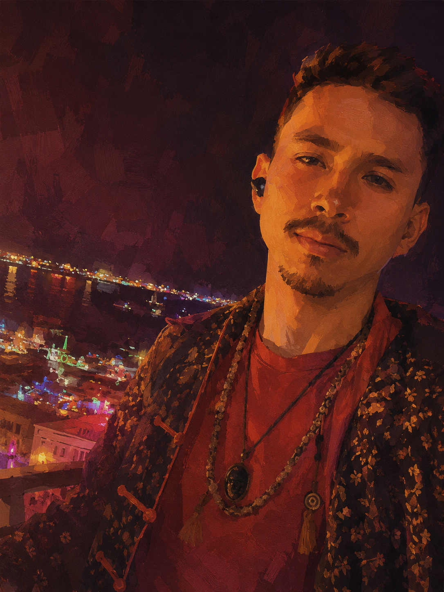

About

I'm a performer, contemplative, consultant, and experience architect. I studied Computation and Cognition as well as Theater Arts at .
My mission is to investigate the material and subjective foundations of our world, and to apply that knowledge in the service of compassionate intelligence, more joyful human-computer interactions, and more effective psychiatry. I'm open for professional collaborations, artistic projects, and fun adventures.
I design bridges between the profound ideas of art, science, philosophy, and spirituality and the intimate, tangible wisdom of our daily lives. I tell beautiful and compelling stories to help guide us across.
I speak English, Spanish, French, and Portuguese. I get along very well with old people and babies. I'm obsessed with mangos, spicy food, and guacamole.
Mind
Translation · Voice
Waking Up · en español
Spanish translations of the Waking Up app's Introductory Course and theory lessons — 28 guided sessions.
Escuchar · Listen →Life
Altar
Work
Experience
-
Morgridge Institute for Research
Researcher — AI in Education and Science
-
RARE.
Founder
Designing experiences and technology that honor what it means to be human.
-
Waking Up
AI Strategy & Translation Consultant
Helped make wisdom and peace more accessible to one of the largest language markets in the world.
-
Massachusetts Institute of Technology
Research Associate
Replicated Monte Carlo Tree Search, the algorithm behind the AlphaGo win against Lee Sedol. Made fun videos for monkeys to help study the part of their brains that recognizes living things. Organized dancing, biking, and food parties to bring together brilliant scientists, artists, and entrepreneurs across Cambridge.
Community Lead — MIT Summer Research Program
Gave 40 brilliant researchers an outstanding time for a memorable summer in our modern-day Athens.
-
Tremau
ML Research Team Lead
Led an international team of data scientists during my first summer in the capital of love.
Education
-
Massachusetts Institute of Technology
Bachelor of Science — Computation and Cognition
Concentration in Theater Arts.
-
Harvard University
Cross-registered for the course Decisions, Big & Small with Professor Tomer Ullman in the Department of Psychology.
-
Massachusetts Institute of Technology
Master of Engineering — Computation and Cognition
Currently deferred.
-
The Johns Hopkins University
Doctor of Philosophy — PhD
Admitted to the Physics PhD program. I stepped away to play my part in the rising technological frontier.
-
Mercer University
Bachelor of Engineering — Electrical and Electronics Engineering
I left after 2.5 years to pursue research and studies in AI and Cognitive Science.
Licenses & Certifications
-
Open Water Scuba Diver
PADI
Volunteering
-
Psychedelic Science 2025
Talent / Speaker Coordinator — Multidisciplinary Association for Psychedelic Studies (MAPS)
Hosted current leaders of the next revolution in mental and spiritual health.
Contact